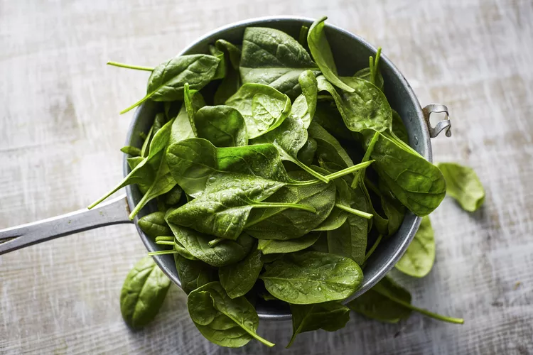
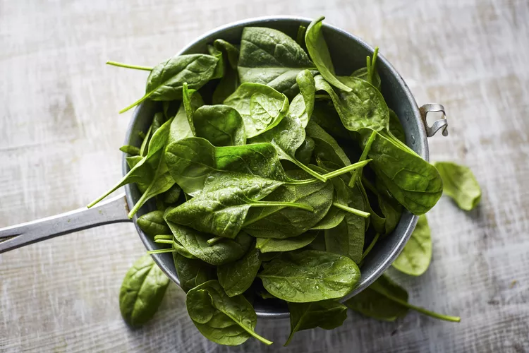
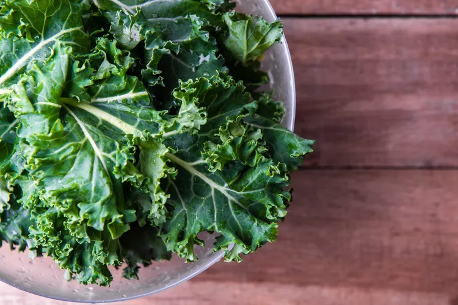
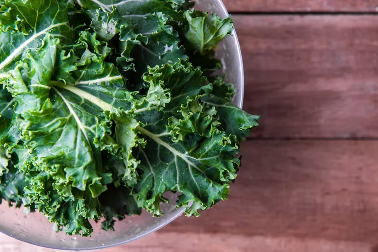

Nutrient-Rich: Vegetables are packed with essential vitamins, minerals, and antioxidants, including:
Vitamin C (bell peppers, broccoli) for immune system support
Fiber (leafy greens, legumes) for digestive health and satiety
Vitamin A (carrots, broccoli) for eye health and immune function
Potassium (spinach, sweet potatoes) for heart health and blood pressure regulation
Phytonutrients (carotenoids, flavonoids) for anti-inflammatory and anti-cancer properties


 

 
